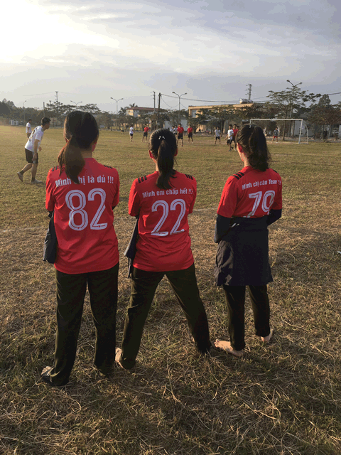

Bộ sưu tập những hình ảnh chất như nước cất của các thành viên tiểu đội 2

Thành viên đầu tiên của Tiểu đội, Huỳnh Tấn Hùng, đến từ quê hương Quảng Ngãi.

Sở hữu kỹ năng đi bóng và dứt điểm siêu phàm, anh đã có không ít đóng góp vào thành tích thể thao của Tiểu đội nói riêng cũng như của cả Trung đội nói chung.

Ngoài bóng đá, cầu thủ sinh năm 1990 còn có một đam mê khác, đó là đua xe...

Nhắc đến Quảng Ngãi, sẽ là một thiếu sót lớn nếu bỏ qua Nhiếp ảnh gia Nguyễn Anh Luýt.

Với lợi thế mái tóc xù cùng bộ râu lún phún, anh khiến không biết bao nhiêu thiếu nữ say mê

Sở thích khi rảnh rỗi của Luýt là đọc sách, đi du lịch,


